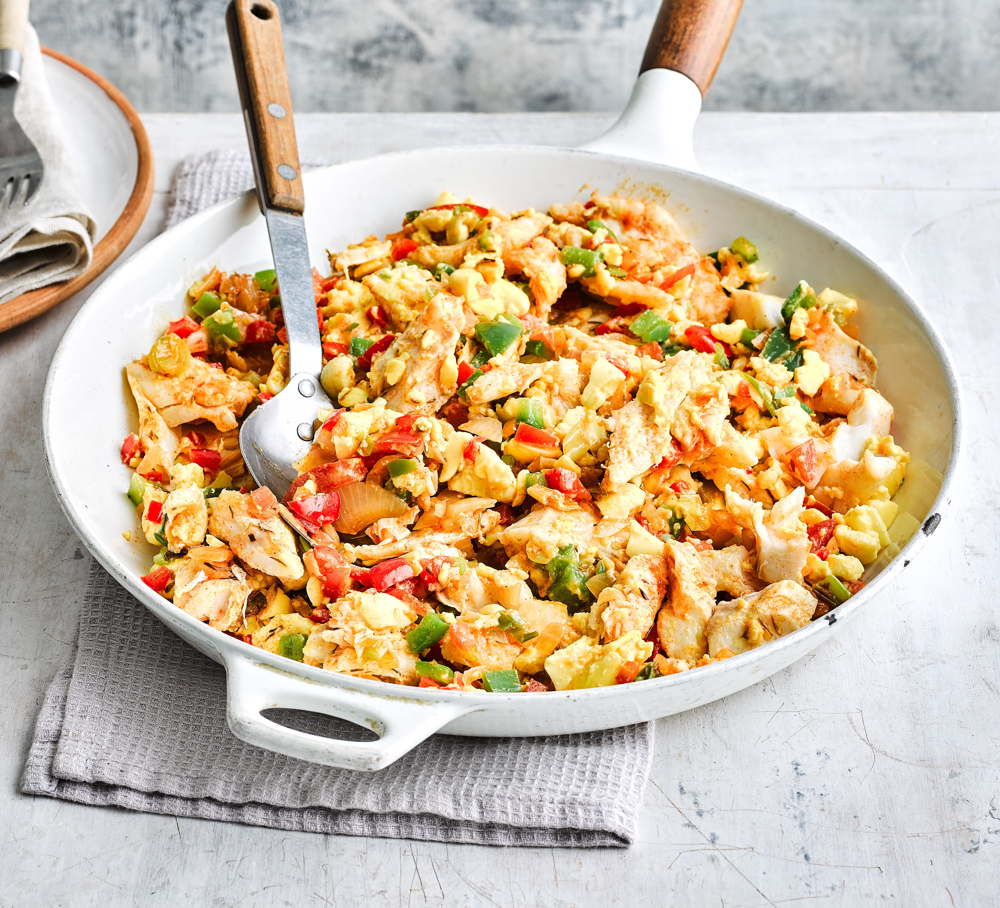

Ackee and Saltfish

Cook a traditional Jamaican dish, ackee and salted cod, for a hearty brunch.
With peppers, tomato and garlic alongside the ackee fruit, it's full of flavour!
Ackee and Saltfish is Jamaica's national dish.
Ackee is a fatty fruit that must be picked only when ripe, and then properly cleaned by someone who knows what they are doing.
Saltfish is salted cod. It’s usually paired with all sorts of side dishes. Anything from boiled dumplings, roast breadfruit and boiled banana
to fried dumplings, callaloo and fried breadfruit are great side dishes.
ingredients
- 600g boneless salted cod
- 2 tbsp vegetable oil
- 1 medium onion
- 4 garlic cloves
- 3 spring onions
- 1 scotch bonnet pepper
- 1 tsp dried thyme
- 1 tsp ground pimento
- ½ red pepper
- ½ green pepper
- 1 large tomato
- 2 x 540g cans ackee
Method
- Put the salt cold in your pot and cover with cold water. Bring to the boil, then boil for 5 minutes, drain and add fresh cold water to cover./li>
- Repeat this process until you're happy with the saltiness when tasted; we recommend to boil the fish three times in total for a perfect balance of salt in the fish. Drain and leave to cool. Use a fork to shred the salted cod into pieces and set aside.
- Now you'll need a large frying pan. Pour the vegetable oil into the frying pan and place over a high heat. Once the oil is sizzling hot, turn the heat down to low-medium. Add the onion, garlic, spring onions and scotch bonnet, then cook until soft, for around 5-7 minutes.
- Add the salted cod, dash in some black pepper, thyme and pimento, then mix it together and cook down for around 3 minutes.
- Next, add in the red and green bell peppers, along with your tomato. Mix together and cook down for 2-3 minutes. These ingredients help to bring a heat balance, so it's not too spicy.
- Now you'll need to add in your ackee and dash in a little more black pepper. Fold in the ackee; the ackee is soft so it's important to fold it in very gently – nobody likes mushy ackee.
Home